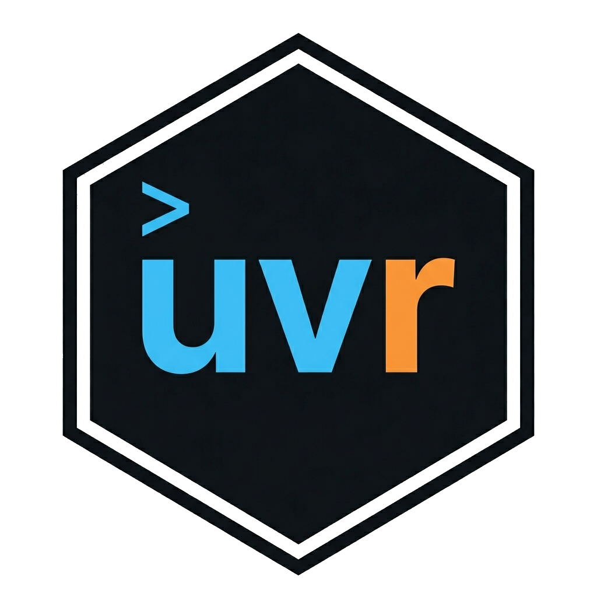

Run an R script in the project environment
run.RdExecutes a script with the project library active.
Equivalent to uvr run script.R on the command line.
For interactive R, use the CLI directly: uvr run.
Value
A character vector of output lines (returned invisibly). On failure, throws an error with the exit code.
Examples
if (FALSE) { # \dontrun{
run("analysis.R")
run("model.R", args = c("--seed", "42"))
} # }